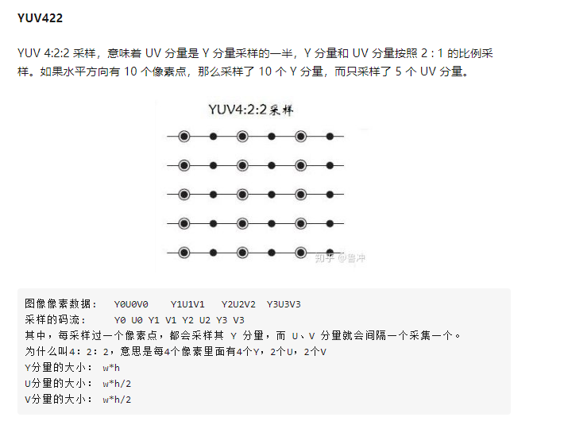
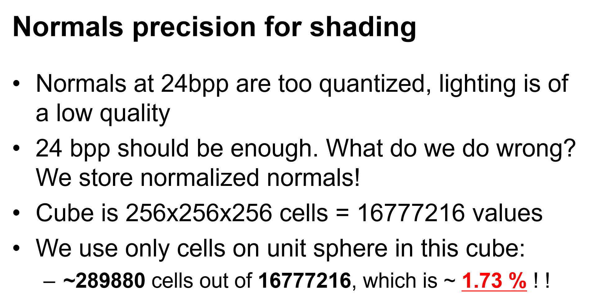
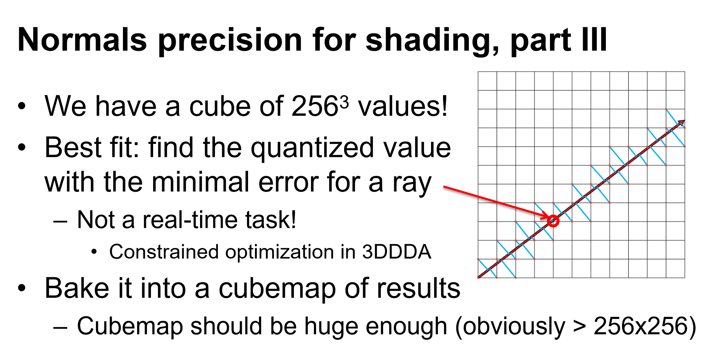
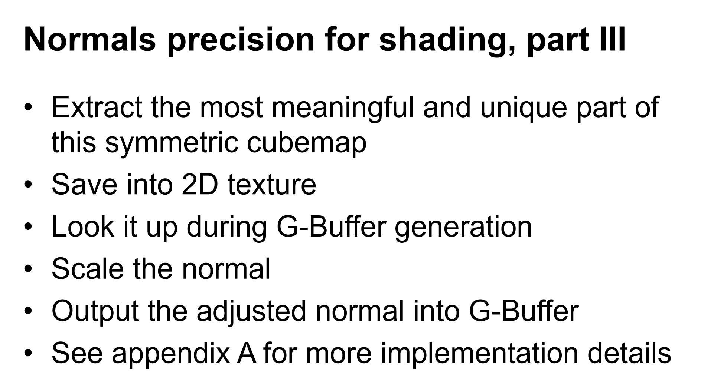
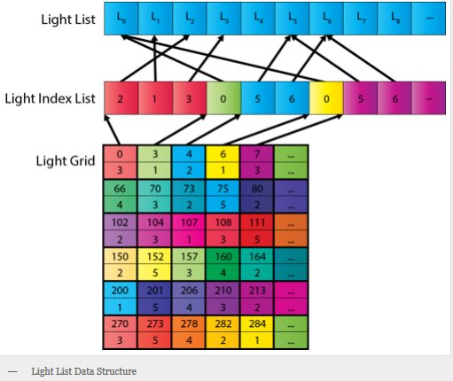

Deferred Shading优化方案总结:
1.光体积
点光源:
绘制一个以光源为中心的球体模型。
方法一:
渲染流程:
a.GEOMETRY PASS
b.LIGHTINGPASS
第一步:
禁止背面剔除
禁止写入深度缓冲，开启深度测试
模版测试:
始终通过
模版操作:
正面:深度/模版测试通过 模版缓冲区值不变 深度测试失败 模版缓冲区值-1
背面:深度/模版测试通过 模版缓冲区值不变 深度测试失败 模版缓冲区值+1
渲染球体
第二步:
开启背面剔除 剔除正面
禁止写入深度缓冲，禁止深度测试
模版测试:
模版缓冲区值不等于零时，模版测试通过
模版操作:
无
渲染球体
参考资料:
http://ogldev.atspace.co.uk/www/tutorial37/tutorial37.html
方法二:
Depths Bounds Test
2.Albeos:
YCrCb:

参考资料:
https://zhuanlan.zhihu.com/p/68532444
2.Normals:
Best fit for normals:



参考资料:
Kaplanyan-CryEngine3(SIGGRAPH 2010 Advanced RealTime Rendering Course)
法线压缩
参考资料:
https://aras-p.info/texts/CompactNormalStorage.html
Deferred Lighting/Tiled Based Deferred Rendering优化方案总结:
参考资料:
http://www.realtimerendering.com/blog/deferred-lighting-approaches/
https://www.slideshare.net/cagetu/light-prepass
https://wickedengine.net/2018/01/10/optimizing-tile-based-light-culling/
https://www.gdcvault.com/play/1017627/Advanced-Visual-Effects-with-DirectX
Cluster Shading优化方案总结:
结构存储:
三层结构

Light List存储所有的灯光数据
Light Index List存储每个Cluster的灯光索引
Light Grid存储每个Cluster在Light Index List中的开始和结束位置
二层结构
Light List存储所有的灯光数据
Light Grid存储每个Cluster的灯光数和索引（定长存储，有一定空间浪费）
结构选择
三层结构没有空间浪费，但多一次采样。
二层结构有空间浪费，且要规定每个Cluster区域内最大灯光数。
Culling算法优化
减少Cluster切分个数，从321632降低到16832。性能有一定提升，但由于牺牲了裁剪精度，有时会导致GPU性能增加。
简化求交算法：用球型包围盒代替六面体进行求交运算，也是一种牺牲裁剪精度的思想，有一定性能提升。
合并多个Cluster进行计算，减少灯光遍历次数，并通过粗粒度剔除提升算法效率，性能提升效果明显。
总结
在灯光分配方案选择上，可以根据项目性能瓶颈，选择CPU方案或GPU方案（华为Mali的GPU性能较差，建议用CPU方案）。